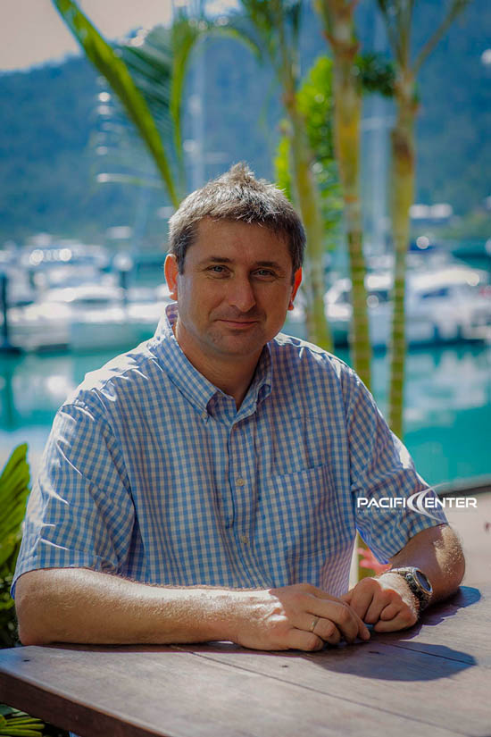

01.01
Skilled migration
Occupation and skills assessment guidance, points advice, expressions of interest and state or territory nomination.
Skilled Independent 189 · Skilled Nominated 190 · Skilled Work Regional 491
A career worth moving for. A place to learn. A life with the people you love. Let’s find your way forward in Australia.

Your plans. Our personal attention.Meet the people in your cornerRegistered migration advicePiotr Ferenc · MARN 0743766
A team that knows your casePersonal guidance at every stage
Here, wherever you areQueensland offices & online consultations
Explore our full range of migration, education and business services. Find your starting point, then let’s talk about your circumstances.
From your first work visa to your longer-term plans, understand the pathway that fits your experience.
Occupation and skills assessment guidance, points advice, expressions of interest and state or territory nomination.
Support for overseas workers and the employers sponsoring them, including visa eligibility and application preparation.
Guidance for workplace training and eligible temporary activities, including sports-related activities.
Look beyond your current visa. Get an assessment of eligible permanent and regional pathways, with application support.
Eligibility guidance, document preparation and support for the citizenship application, test and interview stages.
Make room for the people who matter. We help you prepare the evidence behind your family’s plans.
Onshore and offshore partner applications, fiancé visas, sponsor eligibility and relationship evidence preparation.
Explore temporary, aged and contributory parent options, with guidance on sponsor and application requirements.
Application support for eligible children, adopted children and orphan relatives joining family in Australia.
Advice for remaining relatives, aged dependent relatives, carers and eligible family members of New Zealand citizens.
Our migration team and Australian Study Center connect your education plans with practical visa support.
Application guidance for school, English language, vocational and higher education study in Australia.
Help comparing courses and institutions, preparing enrolment and scholarship applications, and arranging OSHC.
Advice and application support for eligible parents or guardians accompanying a student in Australia.
Understand the temporary graduate options relevant to your studies and prepare the next stage of your application.
For a holiday, a family reunion or a short visit, start with the right advice for your travel plans.
Tourism, family-sponsored visits, business visits and frequent traveller options, with document and application support.
Guidance for eligible travellers planning to combine a holiday in Australia with temporary work.
Visa application guidance for eligible visitors travelling to Australia for medical treatment or related support.
Practical migration support for Australian employers, recruitment needs and existing business visa matters.
Standard Business Sponsorship, position nominations and guidance on the obligations of sponsoring overseas workers.
Help assessing the business’s options, documenting workforce needs and preparing relevant agreement and nomination material.
Support connecting employers and candidates, reviewing CVs and considering visa and sponsorship suitability.
Support for existing business and investment visa holders, including eligible permanent-stage applications.
The Business Innovation and Investment Program is closed to new applications. Our business visa support relates to existing visa holders and eligible next stages.
Let’s talk about employers & businessCareful advice when the circumstances are complex, the decision matters and the next steps need clarity.
Decision assessment, review and appeal options, evidence, submissions and hearing preparation. Advice on ministerial intervention where relevant.
A personal consultation to understand your circumstances, discuss relevant humanitarian options and explain possible application support.
Pacific Center has helped people with Australian visa and migration matters since 2003. We take the time to understand the person behind every application.
Director & Migration Agent
Director & Head of Marketing
Office Manager & Case Manager
A Queensland team. An international outlook.
Personal support, wherever your journey begins.
Clear advice, careful preparation and someone to turn to. Here’s how we work with you.
One conversation.
A clearer direction.
We discuss your circumstances, your goals and the visa options worth exploring.
With an agreed scope and fees, we guide your documents and prepare your application.
Your application is reviewed and lodged, with guidance on any further requirements.
We monitor progress, keep you informed and help you understand what comes next.
Know where you stand. Professional fees and the agreed work are explained before we begin.
Get help with employer sponsorship, labour agreements and the migration requirements of hiring overseas talent.
Every situation is different. A conversation with our team helps put the general information into context for you.
1300 10 50 50Start with a consultation. We’ll discuss your current circumstances, family connections, qualifications and goals, then explain which options may be relevant and the next steps to explore.
Yes. We offer online consultations, so you can speak with our team wherever you are. In-person consultations at our Queensland offices can be arranged by appointment.
We assist with business sponsorship, position nominations and employee visa matters. We can explain the requirements and responsibilities relevant to each part of the process.
Our professional services are generally agreed on a fixed-fee basis, with the scope and payment stages set out in your agreement. Government application charges and other costs, such as medicals, skills assessments or English tests, are separate.
Contact the team promptly and have your decision letter available for your consultation. We can assess the options relevant to your circumstances. Review rights and deadlines vary, so it is important to seek advice without delay.
Tell us where you are today, and where you’d like to be.
We’ll take it from there, together.
Monday–Friday · 8:30am–5:30pm AEST
18/406 Shute Harbour Road
Airlie Beach, QLD 4802
25 Harbour Village Parade
Coomera Waters, QLD 4209
Connect with our team online
from Australia or overseas.